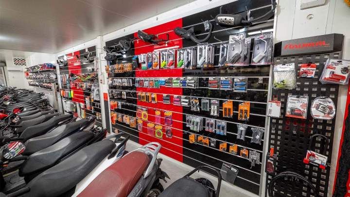

MotoGParts, spécialiste pièces et accessoires 2-roues
Pièces de qualité origine, 100% françaises. Découvrez nos produits
Des pièces de qualité origine
Les pièces que nous proposons à la vente sont toutes de qualité type origine. Elles s'adapterons ainsi parfaitement à votre véhicule, tout en conservant la qualité de fabrication d'une pièce neuve.

100% Made in France
Tous nos fournisseurs sont situés en france
Livraison rapide, satisfait ou remboursé
Les pièces que nous proposons à la vente sont toutes de qualité type origine. Elles s'adapterons ainsi parfaitement à votre véhicule, tout en conservant la qualité de fabrication d'une pièce neuve.